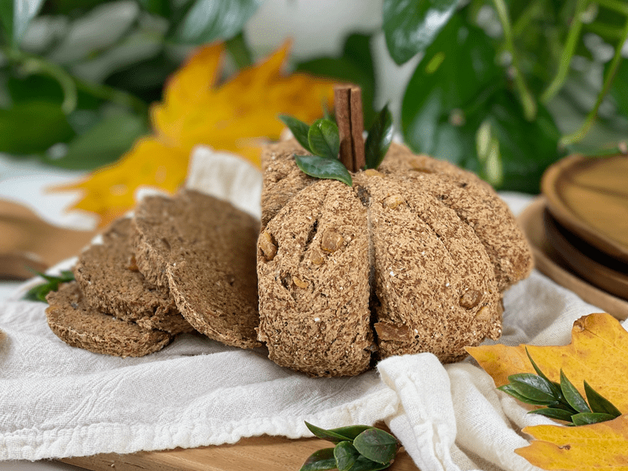
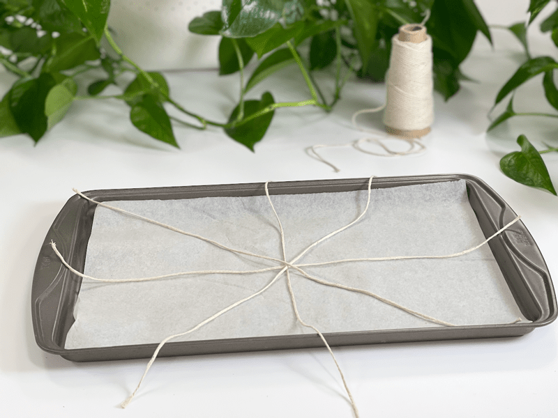
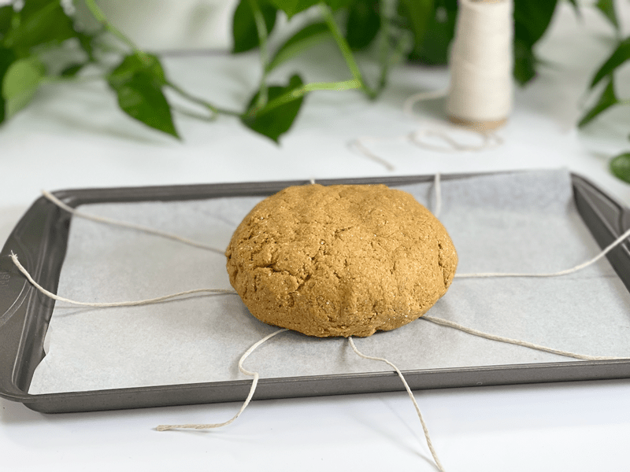
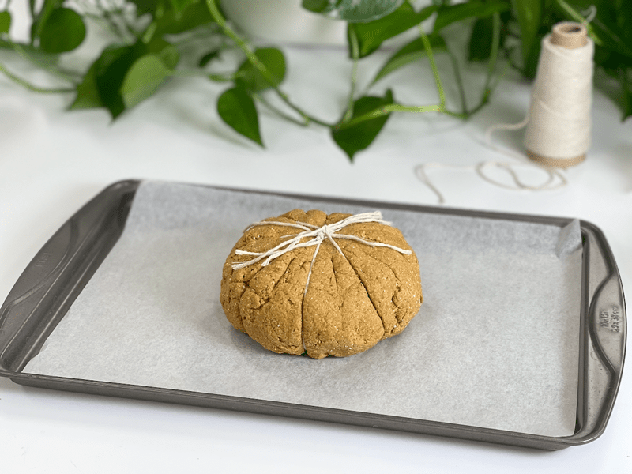
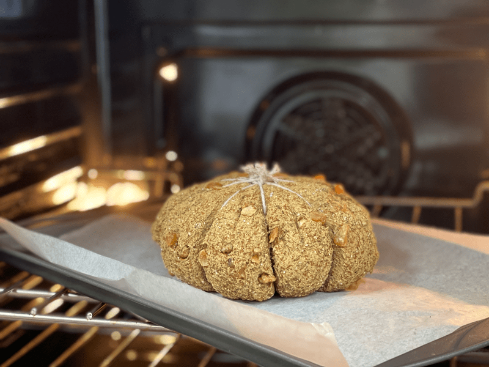
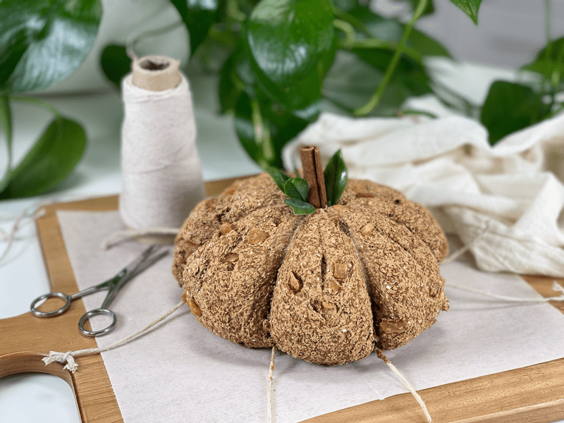

Pumpkin Ginger Bread | vegan, gluten-free, yeast-free
Since pumpkin season is here, I am going to take full advantage of it! Ready for a delicious artisan loaf of bread that has a mild pumpkin flavor and is studded with dried candied ginger? This is a soft, tender loaf that is totally delicious served alongside a warm soup or stew. Or if you are like me, toast up a slice and glide on a thin spread of raw honey to have with your morning coffee or tea.
Before you get all excited thinking you are going to get a sugar rush from this bread… think again. The only sweetness comes from the pure pumpkin puree, one tablespoon of molasses, and the sweet heat from the chewy candied ginger. I have a recipe coming out for Ginger Pumpkin Quick Bread that is more on the dessert side of the menu.
Frankly, when I created this recipe, I didn’t think it would be Bob’s cup of tea. He isn’t a huge fan of “pumpkin anything” and I was worried that he would want the bread to be sweeter based on the name of the bread. I handed him half a slice and started washing the dishes. He called out for the other half.
After serving him the other half, I put my big yellow up to the armpit dish gloves back on and dived my hands into the sink. Between the splishing and sploshing of sudsy water, I faintly heard, “Can I have another FULL piece of that bread?!” Much to my delight, he loved(s) the bread. He couldn’t get over the chewy sweet heat from the ginger and how it complemented the overall taste of the bread. Mission accomplished. Today, I am only going to touch on the main two ingredients; pumpkin and ginger…
Fresh Pumpkin Puree or Canned
- Using canned pumpkin puree is quick and easy, which is why we call for it in this recipe. However, if you would like to use fresh pumpkin puree, you can replace 1:1 with freshly roasted and pureed pumpkin. If you go the canned route, make sure you scan over the ingredients and avoid purees that have any other added ingredients.
- If you don’t have canned pumpkin on hand but spot a can of creamed sweet potato… by all means, use that! It will taste amazing.

Crystallized Candied Ginger
- This is a store-bought version of dried ginger. It does come with a slight sugar coating, which enhances the ginger. Raw, pure ginger is unappealing to most people. Only you know your palate.
- Depending on the brand you use, you may need to dice it into smaller pieces.
Caution: Baking String/Twine
A word of caution: the type of string/twine you use for baking MATTERS. Below, I shared some of the basic types of string/twine that you may already have in the house, or maybe you’ll need to pick some up at the store. Not all will work in the oven.
- Butcher’s twine: also known as cooking or kitchen twine. It is durable, low-stretch, oven-safe, and often made of cotton, polyester/cotton blend, or linen.
- Baker’s Twine: typically made of cotton or a polyester/cotton blend, this twine is food-safe but not intended for baking. It is a durable twine with some stretch that often comes in different colors or stripes.
- Industrial Twine: often made of polypropylene, this twine has minimal stretch and is not recommended for use with food. This twine is highly durable and its waterproof design resists rot and mildew.
- Cotton Twine: food-safe, oven-safe, and strong, making it ideal for cooking. Plus, cotton is a renewable resource so it’s one of the more environmentally friendly twines.
- Hemp Twine: made of 100% hemp, environmentally friendly, biodegradable, and compostable. Perfect for securing or tying, this low-stretch, durable twine is food-safe but should not be used with heat or put into the oven.
- Jute Twine: made from 100% jute, environmentally friendly, biodegradable, and compostable. Jute twine is a food-safe, durable product with low stretch and is not recommended for use with heat or in an oven.
- Linen Twine: made from flax plants and has antibacterial properties. It is durable, oven-safe, food-safe, and low-stretch.
 Ingredients
Ingredients
Step 1
- 5 Tbsp (30 g) psyllium whole husks
- 1 1/2 cup (330 g) water
Step 2
- 1 cup (100 g) gluten-free, rolled oats, ground
- 3/4 cup (100 g) sorghum flour
- 1/2 cup (100 g) raw hulled buckwheat, ground
- 5 Tbsp (40 g) arrowroot powder
- 1 Tbsp (7 g) pumpkin spice
- 1 tsp (2 g) ground Ceylon cinnamon
- 1 tsp (6 g) sea salt
- 1 tsp (4 g) baking powder
- 1/2 tsp (3 g) baking soda
- 1 Tbsp (22 g) molasses
- 1/2 cup (68 g) crystallized ginger
- 1/2 cups (126 g) pumpkin puree
Step 3
Preparation
Step 1 – Psyllium Gel
- Quickly whisk the water and psyllium husk powder in a mixing bowl. It will instantly start to gel, which is to be expected. Set aside while you prepare the remaining ingredients, so it can thicken.
- Preheat the oven to 350 degrees (F).
- Line a baking sheet with parchment paper and set it aside.
Step 2 – Dry Ingredients
- In the mixing bowl that we are going to knead the bread in, whisk together the oat flour, sorghum flour, buckwheat flour, arrowroot, pumpkin spice, cinnamon, salt, baking soda, and baking powder.
Mixing the Dough
- Add the psyllium gel, molasses, candied ginger, and pumpkin puree to the dry ingredients.
- Using either a hand mixer or a free-standing mixer with dough attachments, knead for 5 minutes (set a timer on your phone) on low to ensure that it gets kneaded enough (don’t we all love feeling kneaded?).
Step 3 – Creating Pumpkin-Shaped Bread
- Line a baking sheet with a piece of parchment paper.
- Cut four 18-inch-long pieces of kitchen string/twine and lay them in the center of the baking pan, crisscrossing at the center to create a star-shaped pattern.
- Shape the dough into a ball shape, slightly flatten it and place it on the center of where all the strings intersect, then one string at a time, tie the ends of the string up over the dough and secure in a knot. Repeat until all the strings have been secured around the dough. Do not tie the twine too tightly.
- Score each lobe of the pumpkin bread dough to give room for expansion while baking.
- Bake on the center rack for 60 minutes.
- Take the loaf out of the oven and turn it upside down. Give the bottom of the loaf a firm thump! with your thumb, like striking a drum. The bread will sound hollow when it’s done.
- When it’s done baking, slide it onto a cooling rack and wait to cut when cool.
Storage
- Once the bread has thoroughly cooled, you can wrap it. It should last up to roughly 5 days.
- Brown paper bag: This will better protect your loaf and allow for good air circulation, meaning that your crust won’t get soft. Some people claim that a sliced loaf stored cut-side down in a paper bag will stay the freshest.
- Plastic bag: If you want to avoid staling at all costs, go with a plastic bag. Make sure to get as much air out as possible before sealing. Your crust will soften, but your bread won’t dry out or harden prematurely. Make up for unwanted softness with toasting.
- Tea towel: Wrap the bread in a tea towel, then place it in the bread box.
- Fridge: Whether you store it in the fridge is up to you. Many people feel that bread in the fridge turns stale quicker. If you’re not going to finish a loaf in the first few days after baking it, you might want to freeze it until you’re ready to eat it.
- Freezing: Rather than freezing the loaf as a whole, preslice it and place wax or parchment paper in between each slice before sliding it into a freezer-safe container. That way you can pull out as many slices as you want.
-

-
Lay out the 4 strings in this configuration.
-

-
Place the bread dough in the center of the strings. (These next 2 photos were of the first loaf I made without the ginger.)
-

-
Pull the opposite ends of the strings together and tie them in a gentle knot.
-

-
Bake.
-

-
Cut and remove the strings, poke a cinnamon stick in the center and add a few leaves for decoration. Because I knew that no one would be eating the cinnamon stick, I used some fake leaves (it’s what I had on hand).
© AmieSue.com